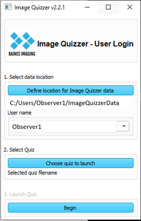

Response capture
The quiz question responses are captured in a results xml file found in the Users/Username/ folder. If any annotations were created (contours and/or markup measurement lines) these are found in subfolders, one for each Page.
Location
When the user first logs in to the Image Quizzer, a results XML file is created with the same name as the original master XML file. This file is placed in the Users/Username folder that gets created on the first login. You will find the Users folder under the directory you defined to be the database directory.
For example, Observer1 has logged in to run the ObserverContouringStudy quiz. The administrator has placed all the image volumes for this study in the folder named ImageQuizzerData (the database directory). When the user logs in to the quiz session, he/she has to browse to the ImageQuizzerData database folder.

The results XML file will be found here:
.
└─ImageQuizzerData/
├─ImageVolumes/
├─SlicerDicomDatabse/
└─Users/
└─Observer1/
└─ObserverContouringStudy.xml
This is a copy of the original master quiz as set up by the administrator. As the quiz progresses throughout the user's login session, elements and attributes are added to capture various pieces of information (responses, login times, username etc.) as described below.
Each time the user exits and resumes the quiz, this results file is copied and renamed with a timestamp suffix in order to safeguard against hardware issues or power failures. The file without a timestamp suffix will be the most recent and most complete results file.
Note
The SlicerDicomDatabase folder is created automatically by Slicer when the user logs in to manage information about DICOM data.
Annotations subfolders
If contours and markup lines were required, they are stored in subfolders - one for each Page. The assigned PageGroup number (either by administrator or automatically by the Image Quizzer) is embedded in the folder name for cross-referencing with the results quiz file. For example, if there were 3 pages in the quiz and a contour and at least one markup line was requested for each, the Users folder could look like this:
.
└─ImageQuizzerData/
├─ImageVolumes/
├─SlicerDicomDatabse/
└─Users/
└─Observer1/
├─ObserverContouringStudy.xml
├─(PgGroup1_PageID_PageDescriptor)/
├ ├─imagename-bainesquizlabel.nrrd
├ ├─imagename_MarkupsLine_bainesquizline.nrrd
├ └─imagename_MarkupsLine_1_bainesquizline.mrk
├─(PgGroup2_PageID_PageDescriptor)/
├ ├─imagename-bainesquizlabel.nrrd
├ ├─imagename_MarkupsLine_bainesquizline.mrk
├ ├─imagename_MarkupsLine_1_bainesquizline.mrk
├ └─imagename_MarkupsLine_2_bainesquizline.mrk
└─(PgGroup3_PageID_PageDescriptor)/
├─imagename-bainesquizlabel.nrrd
└─imagename_MarkupsLine_bainesquizline.mrk
Contour capture
Creating a contour will add a LabelMapPath element as a child of the Image element to the results file which stores the relative directory path where you can find the label map mask file.
It is stored in a subfolder with PgGroup#_PgID_PgDescriptor .
File name is constructed using ImageID_ImageDescriptor-bainesquizlabel.nrrd
MarkupLine capture
Creating measurement lines using the tool in the Extra Tools tab will create a MarkupLinePath element as a child of the Image element to the results file. This element stores the relative directory path where you can find the markup line file.
It is stored in a subfolder with PgGroup#_PgID_PgDescriptor . File name is constructed using ImageID_ImageDescriptor-MarkupsLine_bainesquizline.mrk.json
New Elements
Response
The Response element is created as a child of each Option element. The type of response captured depends on the Question Type attribute.
If the Type is an InfoBox, the response captured for the Option is null. For Radio or CheckBox types, the response is a "Y" or "N" value depending on whether the radio button or checkbox has been selected. If the Type is a Text, IntegerValue, or FloatValue Types the response element will hold the text that the user input into that box.
Also captured as attributes in the Response element are timestamps LoginTime and the ResponseTime.
Examples for Response element based on Question Type:
InfoBox:
<Question Descriptor="Introduction" Type="InfoBox">
<Option>
Using the Segment Editor tab, create a contour for displayed image
<Response LoginTime="20230317_15:56:40.964017" ResponseTime="20230317_15:58:27.114871"/>
</Option>
</Question>
Radio
<Question Descriptor="Assessment" Type="Radio">
<Option>
Injury
<Response LoginTime="20230317_15:56:40.964017" ResponseTime="20230317_16:00:22.706985">Y</Response>
</Option>
<Option>
Recurrence
<Response LoginTime="20230317_15:56:40.964017" ResponseTime="20230317_16:00:22.706985">N</Response>
</Option>
</Question>
CheckBox
<Question Descriptor="High Risk Features:" Type="CheckBox">
<Option>
Enlarging opacity
<Response LoginTime="20230317_15:56:40.964017" ResponseTime="20230317_15:57:08.896963">Y</Response>
</Option>
<Option>
Bulging margin
<Response LoginTime="20230317_15:56:40.964017" ResponseTime="20230317_15:57:08.896963">Y</Response>
</Option>
<Option>
Sequential enlargement
<Response LoginTime="20230317_15:56:40.964017" ResponseTime="20230317_15:57:08.896963">N</Response>
</Option>
</Question>
LabelMapPath
The LabelMapPath element is added as a child of the Image element to hold the relative path to the label map file if a contour was created on the image.
MarkupLinePath
The MarkupLinePath element is added as a child of the Image element to hold the relative path to the markup line file(s) if any line measurements was created on the image.
State
The State element is added as a child of the Image element everytime the user moves from one Page to another. This could happen on a Next, Previous, Repeat, or Exit button click. The following attributes are added to record the image state at that time point:
| Attribute | Description |
|---|---|
| Window | window value |
| Level | level value |
| LoginTime | time the Session was started |
| ResponseTime | time when the user switched pages |
| SliceOffset | which slice was the user viewing (mm) |
| ViewingMode | 3Planes, 1Plane, or Default |
| Destination | Red, Green, Yellow, Slice4 - where this image was located on the screen |
| Orientation | Axial, Sagittal, Coronal of the image being viewed |
RandomizedPageGroupIndices
The <RandomizedPageGroupIndices> element is added to the response XML file under the <Session> element if the RandomizePageGroups attribute was set to "Y" in the Session element. The element holds the list of integers reflecting the randomized order of Page Groups used to direct the order of display of the quiz pages. If this element is not present, then randomizing of pages was not done and the Image Quizzer presented each page in the order defined in the original master quiz XML file.
An example of this element for 4 different page group numbers could look like this:
<RandomizedPageGroupIndices>0,4,2,3,1</RandomizedPageGroupIndices>
PageGroup="0" always appears first if it exists.
Login
When the user first logs in, a <Login> element is added to the response XML file. It holds the login and logout times for the user's session.
<Login LoginTime="20221129_16:35:07.894893" LogoutTime="20221129_17:37:36.548557"/>
When the user completes the assigned quiz, a QuizComplete="y" attribute is added to this element.
<Login LoginTime="20221129_16:35:07.894893" LogoutTime="20221129_17:37:36.548557" QuizComplete="Y"/>
New Attributes
UserName
Once a user has logged in to the Image Quizzer, the attribute UserName will be added to the Session element capturing the Windows defined user name. This allows you to keep track of who the XML results quiz file belongs to, as long as each user has his/her own login profile.
<Session UserName="Observer1">
<Page>
...
</Page>
</Session>
PageGroup
PageGroup numbers can be assigned by the administrator when setting up for randomizing the Pages of the observer study. If they were not set up in the original XML master quiz file, the Image Quizzer will add this attribute to the Page element and assign a sequential number starting at '1'. (A '0' has special meaning for the randomizing functionality).
Rep
The Rep attribute is added to the Page element if any Page in the master XML quiz file has the attribute Loop set to "Y". This reflects the repetition number for looping a page. If there was no looping the Rep attribute will be "0" (i.e. the original Page).
See also the looping example for more details.
PageComplete
The PageComplete attribute is added to the Page element once all the quiz questions and required annotations have been completed by the observer.